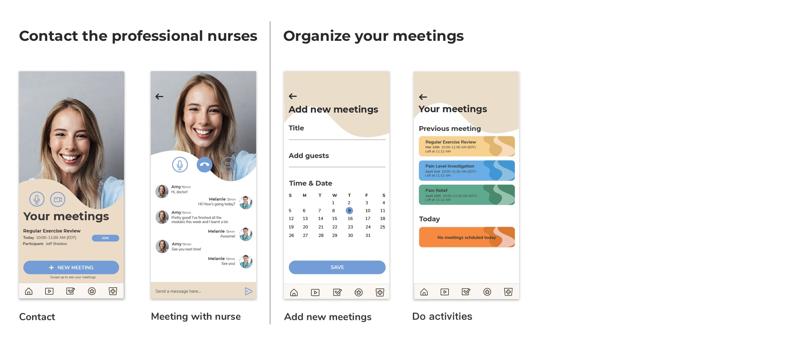
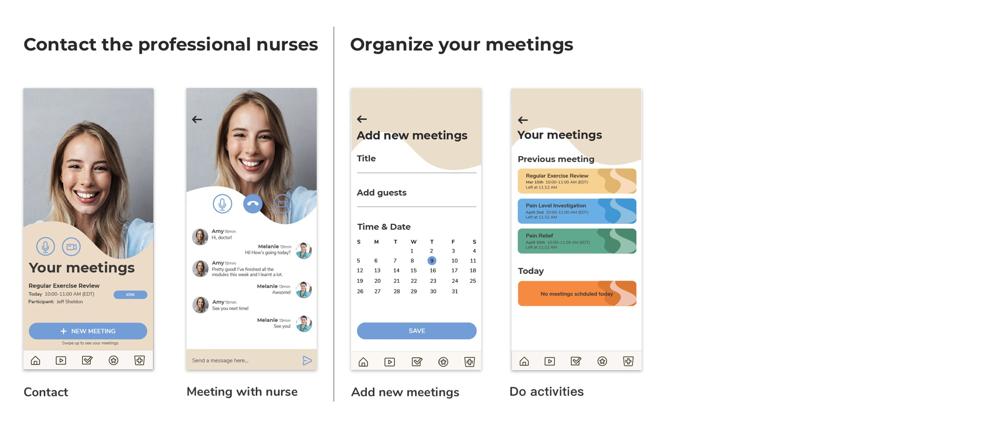

ArtNest
Overview
The artnest is a communication platform for student and entry level artists to gather together with people in the same industry and create unexpected collisions of ideas.
Users can gain critique of their artwork, get rich resources to solve their confusions and questions and join various groups to interact with like-minded people and share ideas. It will help them adapt to the atmosphere of debates and critique in the art field and finally be confident with their artwork.
Role
User Research, UI/UX design, Usability Testing
Team
Yucheng Hang (Individual work)
Tool
Adobe Illustrator, Adobe Xd, Figma, After Effects
INTERACTIVE PROTOTYPE
PERSONAL MOTIVAION
As an entry level UI/UX designer, I found my passion in this field three years ago and started to treat it as my professional field. After that, I was applying for a MFA degree a year ago and now I am trying to find a related job. I personally encountered some frustrating moments during the process. For example, I really want to know someone in the same field as me that can give me some suggestions or advice on career development and learning path. I also expect someone to review and critique my projects and portfolio so that I can be more confident about my work and more competitive in the market. I tried to solve my problems through platforms like Behance, Linkedin and Reddit, however, art and design are a very small branch of them and I cannot find enough resources and information. I am at a loss and sometimes feel lonely during the process of pursuing my dream as a designer.
Therefore I was thinking about creating a communication platform especially for student and entry level artists. They are encouraged to interact with each other by posting and answering their confusions and thoughts encountered in career development and gaining peer critique of their artwork.
DESIGN HYPOTHESIS
I believe that creating a communication platform for student artists/entry level artists to post and answer their confusions and thoughts encountered in career development and gain peer critique of their artwork will help them adapt to the atmosphere of debates and critique and finally be confident with their artwork.
RESEARCH PROCESS
Questionnaire
I created a google form and invited 25 people to do this survey. They are all art-related majors, some of them have official working experience while others are currently undergraduate or graduate students.

Selected questionnaire results
From the survey, I found that my personal experience and feeling is actually a common problem for all kinds of artists. Most of the artists believe that it is harder for them to get resources in career development and learning path compared with other more popular majors. Also, most student artists/ entry level artists are not that confident about their portfolios and they have the desire to find more resources or suggestions from others in the same field as them.
Interview
I conducted a 20mins interview with 5 of my friends and former colleagues. These interviewees came from different age ranges, gender and art backgrounds, from students to employees, from native people to foreigners.
From the survey, I found that my personal experience and feeling is actually a common problem for all kinds of artists. Most of the artists believe that it is harder for them to get resources in career development and learning path compared with other more popular majors. Also, most student artists/ entry level artists are not that confident about their portfolios and they have the desire to find more resources or suggestions from others in the same field as them.
Persona
I conducted a 20mins interview with 5 of my friends and former colleagues. These interviewees came from different age ranges, gender and art backgrounds, from students to employees, from native people to foreigners.
From the survey, I found that my personal experience and feeling is actually a common problem for all kinds of artists. Most of the artists believe that it is harder for them to get resources in career development and learning path compared with other more popular majors. Also, most student artists/ entry level artists are not that confident about their portfolios and they have the desire to find more resources or suggestions from others in the same field as them.
Problem Framing
By digging into the pain points of personas, I framed the main problems of my users.
01
Hard to find enough resources to get objective and comprehensive critiques and evaluations of their work.
02
Compared with other popular majors, lack of a specialized place for artists to post questions and confusions about their professional skills, artwork and career development.
03
Couldn’t find a space for them to share and discuss with people in the same field about some insights and thoughts related to their study and work.
04
Easy to feel alone and at a loss since there are not enough resources in the market.
Opportunities
Based on the key insights, we came up with 3 opportunities aligned with them which we believe can help improve the usability of the app and promote the overall user experience.
01
Improve the usability of the app to make it easier for users to fully engage in managing chronic back pain.
02
Develop a suitable and appealing visual design language.
03
Provide engaging and interactive modules to help patients gain positive learning experience.
REDESIGN PROCESS
Information Architecture
Usability research showed that users had trouble navigating the app to find learning modules, set goals, and track activities. One of the first steps in the redesign process was to simplify the information architecture to tackle these usability concerns.
Original

Redesign

Design System
One of the main endeavors was to give the SpineApp visual depth. The following design system represents the organic and calm mood established in the app.

User flow & High-fidelity mockups


 

Redesign Module Videos
Since the app is currently in the development stage, I cannot show the whole videos here. Therefore, I selected some clips of the animation videos to help getting the sense.
All Works


© Designed by Yucheng Hang